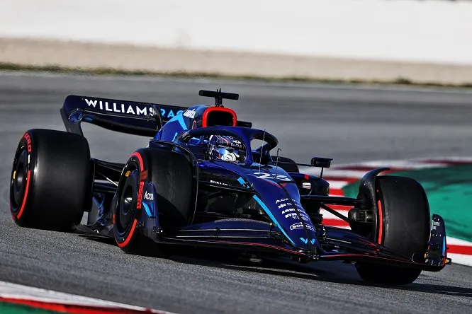

Alexander Albon Ansusinha è nato a Londra il 23 marzo 1996, è un pilota automobilistico thailandese, con passaporto britannico, attivo in Formula 1 con la Williams. Liberato dal team di Formula E, Nissan e.DAMS il 26 novembre 2018 viene ufficializzato il suo ingaggio per la stagione 2019 di Formula 1 nella Scuderia Toro Rosso, dove affianca Daniil Kvjat in sostituzione del neozelandese Brendon Hartley.. Come numero di gara il thailandese sceglie il 23. Albon conquista i primi punti in Formula 1 nel Gran Premio del Bahrein, chiuso in nona posizione. Nel successivo Gran Premio di Cina il pilota thailandese non partecipa alle qualifiche per via di un violento incidente nell'ultima sessione di prove libere, dovendo quindi scattare dall'ultima posizione in griglia di partenza. In gara Albon rimonta fino al decimo posto e viene nominato "pilota del giorno" dal pubblico. Albon torna a punti nel Gran Premio di Monaco, dove giunge ottavo, e nel caotico Gran Premio di Germania, svolto in condizioni meteo variabili, nel quale taglia il traguardo al sesto posto. Il 12 agosto viene annunciato il suo passaggio in Red Bull a partire dal Gran Premio del Belgio, in sostituzione di Pierre Gasly che compie il percorso inverso tornando in Toro Rosso. Nella nuova scuderia Albon continua la striscia di risultati utili iniziata in Toro Rosso, con un quarto posto nel Gran Premio del Giappone come miglior risultato. Nel Gran Premio del Brasile il pilota della Red Bull arriva a occupare la seconda posizione, ma la sua gara è compromessa da un contatto con Lewis Hamilton (successivamente penalizzato di 5" per la manovra), che lo relega nelle retrovie. Albon conclude la stagione all'ottavo posto in classifica piloti con 92 punti. Albon viene confermato dalla Red Bull per la stagione 2020, sempre al fianco di Max Verstappen. Nell'inaugurale Gran Premio d'Austria Albon occupa a lungo la terza posizione, ma in un tentativo di sorpasso su Lewis Hamilton nelle fasi conclusive di gara viene colpito dal pilota della Mercedes (anche in questa occasione ritenuto responsabile e penalizzato di 5" dai commissari di gara) e finisce nelle retrovie, prima di ritirarsi per problemi elettrici. Le gare seguenti si dimostrano difficili per Albon, che giunge quasi sempre a punti, ma viene battuto da Verstappen in tutte le 17 sessioni di qualifica, mancando addirittura l'ingresso nell'ultima fase delle qualifiche sia in Ungheria sia a Silverstone. Anche in gara fatica nel confronto con il compagno di squadra, finendo per essere spesso alle spalle di piloti al volante di vetture meno performanti, come Pérez, Ricciardo, Sainz e Norris. Nel Gran Premio della Toscana, Albon chiude in terza posizione dopo aver superato Daniel Ricciardo nelle ultime fasi di gara, conquistando il suo primo podio in Formula 1, e il primo per un pilota thailandese. Tuttavia nelle quattro gare seguenti ottiene un solo punto, scalando dalla quinta alla nona posizione in classifica. Torna sul podio nel Gran Premio del Bahrain, sempre con il 3º posto ottenuto negli ultimi giri a causa della rottura del motore per Sergio Pérez, che lo precedeva. Chiude la stagione con il settimo posto in classifica con 105 punti, meno della metà del compagno di squadra.  Il 18 dicembre 2020 Red Bull Racing annuncia la sostituzione di Albon con Sergio Pérez a partire dalla stagione 2021; il thailandese rimane comunque nel team austriaco come terzo pilota. L'11 maggio fa il suo esordio stagionale con la Red Bull nei test con le gomme Pirelli da 18 pollici. Inoltre nel mese di agosto il Team Andretti dà la possibilità ad Albon di provare per la sua prima volta una monoposto della IndyCar. Il 4 gennaio 2021 Red Bull Racing annuncia che in occasione del suo ingresso nel DTM come team per la stagione 2021, Albon, insieme a Liam Lawson, sarà ingaggiato per correre in alcune gare con le Ferrari 488 GT3 Evo del team piacentino AF Corse, laddove queste non si sovrappongano ai suoi impegni in qualità di terzo pilota della scuderia in Formula 1. Nella prima gara a Monza raggiunge il quarto posto dopo essere partito al 14º posto, ma grazie alla squalifica di Vincent Abril guadagna un'altra posizione salendo cosi sul podio, mentre nella seconda gara finisce sesto. Dopo essere finito quinto e undicesimo nelle due gare a Lausitz, torna a podio nella prima gara a Zolder. Al Nürburgring conquista la sua prima pole position e la sua prima vittoria nella serie tedesca. Albon, visto l'impegno con la Formula 1, non partecipa all'ultimo round stagionale al Norisring, dove viene sostituito da Nick Cassidy: chiude la stagione al sesto posto, e contribuisce alla vittoria di AF Corse nella classifica team. L'8 settembre 2021 il team britannico Williams conferma Albon come suo pilota ufficiale per la stagione 2022 di Formula 1 al posto dell'uscente George Russell. Il team Red Bull per permettere il suo passaggio in Williams ha dovuto liberare il pilota thailandese, ma mantenendo delle opzioni per il futuro.